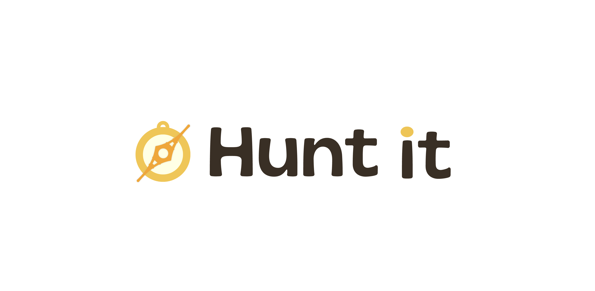
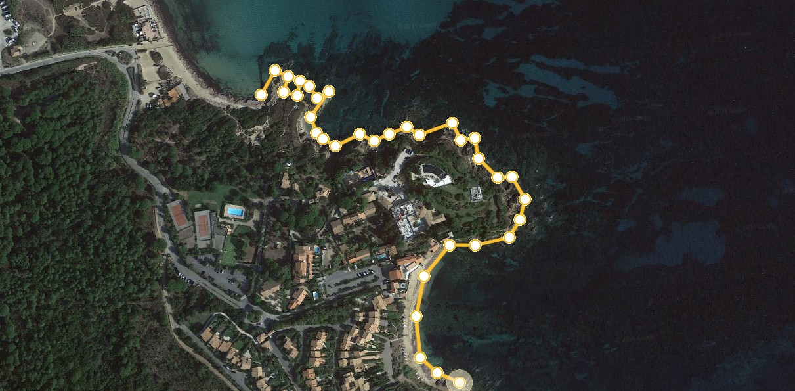

MES TRAVAUX
01. Sciences des Données & Analyse

Prédiction de Durée
Analyse des données cinématographiques pour développer un modèle de régression capable d'estimer la durée d'un long-métrage à l'aide d'algorithmes d'apprentissage automatique.

Colorimétrie du Cinéma
Modélisation et prédiction de la palette de couleurs d'une affiche de film en fonction de ses caractéristiques (genre, année, réalisateur) via des méthodes de Machine Learning.

Violence & Animation
Analyse statistique poussée : les animés (Japonais) les mieux notés par le public sont-ils statistiquement les plus violents ? Web scraping et visualisation de données.
Générations & Voyages
Étude sociologique appuyée par la donnée : analyse du désir de voyager selon les tranches d'âge. Récolte manuelle, régressions et modélisations des résultats.
Analyse Littéraire (ENS)
Collecte de données et analyse statistique sur la littérature japonaise classique (jusqu'à 1850). Extraction de modèles historiques via les Humanités Numériques.
Évolution Linguistique
Analyse de vastes corpus textuels pour modéliser l'évolution d'une langue et de ses structures syntaxiques au fil du temps à l'aide d'algorithmes de traitement du langage naturel (NLP).
Régimes Politiques
Étude statistique comparative mondiale (2023) analysant le poids des budgets et de l'importance accordée à l'armée et à la santé selon le degré d'autoritarisme des États.
02. Projets Web & Créatifs

Hunt-It : Chasse au Trésor
Création d'un site web interactif simulant une "chasse au trésor" dans Paris. Conception des énigmes, développement de mini-jeux interactifs en code natif et hébergement sur GitHub Pages dans le cadre d'un projet interdisciplinaire.

Le Paradoxe du Littoral
Site web réalisé pour illustrer un article scientifique sur les paradoxes mathématiques, et plus particulièrement le paradoxe du littoral (fractales de Mandelbrot). Mise en forme vulgarisée et conception UI/UX pour la médiation scientifique.